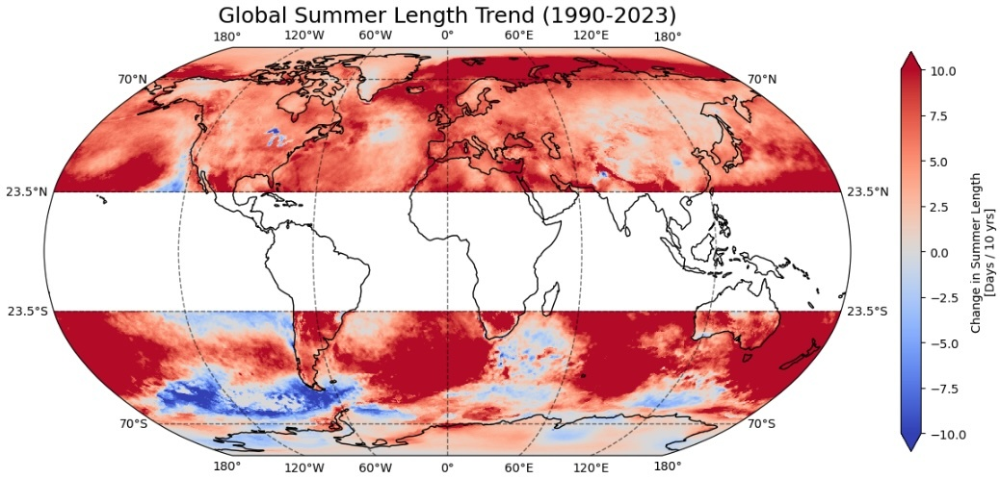
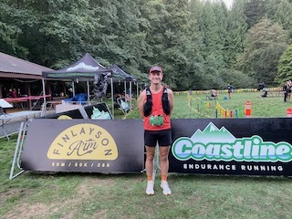

Using a relative surface air temperature threshold for each grid location in ERA5, I can define the start and end of the warmest season of the year, a.k.a. summer. Building on the prior works in this line of inquiry (Park et al 2018, Weller & Park 2020, Wang et al 2021, Lin & Wang 2022), I've found that the rate of increase in summer length since 1990 is 50% higher than previously reported. Seasonal transitions are becoming more abrupt. And, the accumulation of heat in summer is 3x faster since 1990 than over 1961-1990. This work was recently published in Environmental Research Letters.
Ted Scott
PhD student, Geography, UBC
I joined the Climate Dynamics group in 2024 after several years teaching high school science and math, over a decade at Microsoft, and a prior PhD in Geophysics (adv: David L Kohlstedt, U of MN, USA). I am co-supervised by Simon Donner in the UBC Geography department. My current research aim is to understand the evolution of seasonal heat and changing seasonal patterns in a warming climate, with an emphasis on coastal urban areas. I use climate modelling and data science tools (Python, R) to understand these changes and how they are experienced by humanity and ecosystems. I also communicate with policymakers through my role on the Whatcom County Climate Impact Advisory Committee.
Research

FUN
When not doing research, I like to run, rock climb, and ride my bicycle. I'm a huge fan of the burrito.

Publications and Presentations
- Ted J Scott, RH White, SD Donner (2026). Summers over land and ocean are becoming longer, transitioning faster, and accumulating more heat
- T Scott, RH White, SD Donner (2024), A global analysis of the changing summer season length under global warming: land, ocean, and coasts. Oral Presentation: Graduate Climate Conference 2024 (Washington, USA)
- J Hustoft,T Scott, DL Kohlstedt (2007) Effect of metallic melt on the viscosity of peridotite. Earth and Planetary Science Letters 260 (1-2), 355-360.
- T Scott, DL Kohlstedt (2006) The effect of large melt fraction on the deformation behavior of peridotite. Earth and Planetary Science Letters 246 (3-4), 177-187.
Contact
If you would like to contact me, please reach out via email: ted dot scott at ubc dot ca.